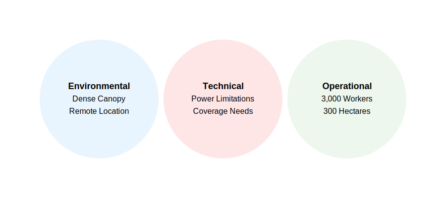

Project Overview
This proposal outlines a LoRaWAN-based real-time worker tracking system designed specifically for remote oil palm plantations in Sabah, Malaysia. The system aims to monitor 3,000 workers across 300 hectares of plantation area using long-range, low-power wireless technology.

Current Challenges
Environmental Limitations
- Dense tropical canopy limiting GPS signal reception
- Remote locations with poor cellular coverage
- Challenging terrain and weather conditions
Technical Constraints
- Limited access to reliable power sources
- Large operational area requiring extensive coverage
- Need for durable equipment in tropical conditions
Operational Requirements
- Real-time tracking of 3,000 workers
- Coverage of 300 hectares of plantation
- Reliable communication in areas with limited infrastructure
Project Objectives
Primary Goals
- Implement real-time worker tracking across the plantation
- Ensure reliable coverage throughout the 300-hectare area
- Establish secure data transmission from field to central monitoring
Technical Goals
- Deploy solar-powered LoRaWAN gateways for optimal coverage
- Implement power-efficient tracking devices for workers
- Create a robust backhaul solution for data transmission
Operational Goals
- Enable immediate response to worker safety incidents
- Provide accurate location data despite GPS limitations
- Ensure system reliability in tropical conditions